Introduction
This is a research study. We want to understand how to best show network data (items with connections between them).
We will use a matrix to show you how US airports (e.g. MIA, JFK) are often used for connecting flights.
All airports are listed once vertically and once horizontally. Two airports are connected (often used for
connecting flights) if there is a black dot in the matrix at their intersection.
The example below shows that FLL is connected to two airports (GSO and IND), JAX is connected to four airports
(FWA, GNV, GRR, GSO, ITH), and both IAD and ISO are not connected to any airports.
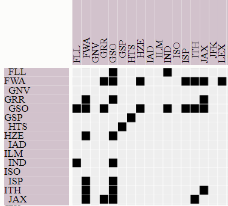
You can interact with the visualization.
-
Zoom by using the mouse wheel.
-
Pan by pressing the left mouse button down and dragging (as in Google maps).
-
Select and deselect airports as answers by double-clicking on them (either in the row or column headers).
-
Select and deselect airports as highlights by clicking once on them (either in the row or column headers).
-
Mouse-over airports and links (the black dots) to highlight them.
Here is an example of a selected answer, a highlighted row, a hovered row and a hovered connection respectively.
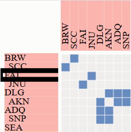
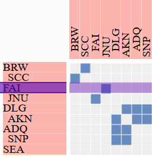
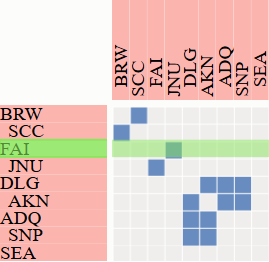
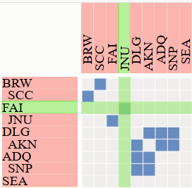
We will ask you a few questions about this data. Please answer the questions as fast and accurate as possible by viewing
and interacting with the visualization. There will be a countdown for each question; once it expires, we will
hide the visualization. We will give you a turk-code to use for payment once you finish the study.
We will pay a $2 bonus to the user with the best overall accuracy/time.
The study includes two questions we consider to be easy enough that everyone can answer correctly. You need to answer both
correctly to receive payment.
Tasks
Task 1: "Given two highlighted airports, select the one with more connections."
Hint: an airport has as many connections as there are dots on its row or column.
Remember, you
can select and deselect nodes as answers by double-clicking on them. A selected answer node has a black border around it. See a few examples below:
| Questions | Answers |
| 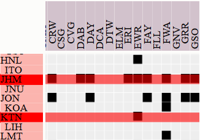 | 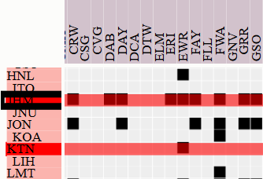 |
| 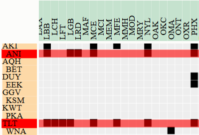 | 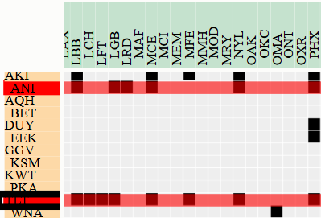 |
Task2: "Select all airports that the highlighted airport is connected to."
Hint: find all dots on the selected row and trace them up to their column labels.
Remember, you
can select and deselect nodes as answers by double-clicking on them. A selected answer node has a black border around it. See a few examples below:
| Questions | Answers |
| 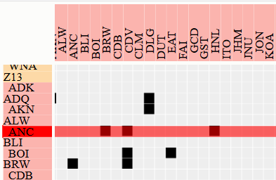 | 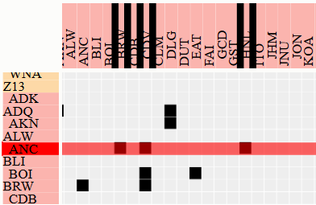 |
| 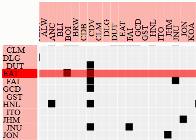 | 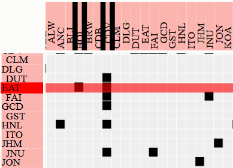 |
Task3: "Given two highlighted clusters of airports, select the cluster that
has the most interconnections between its members."
See a few examples below:
| Questions | Answers |
| 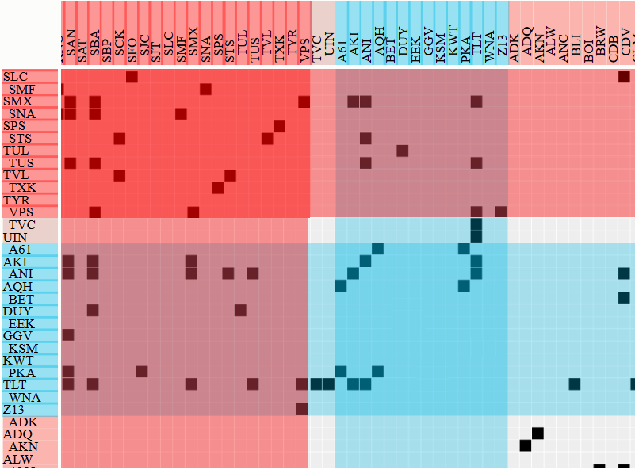 | 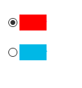 |
| 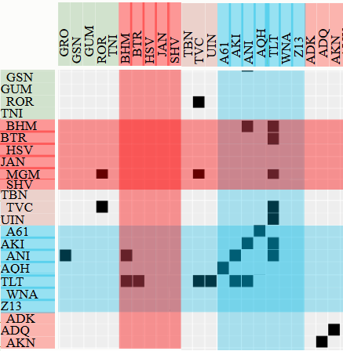 |  |